Level 2
The Lore
AI history and rumours.

0:11 · Beginner
The lore · 1950 to the 1990s
The lore · 1997 to 2016
The lore · 2017 to 2023
The lore · 2024 to now
Myth or fact? · Hands up
Myth or fact? · Hands up
Myth or fact? · Hands up
Myth or fact? · Hands up
All 14 claims are in the Myth or Fact? module.
The lesson
Every hype had a winter
Treat every "AGI next year" headline as a rumour until you see it work.
AGI has been "a few years away" since 1956.